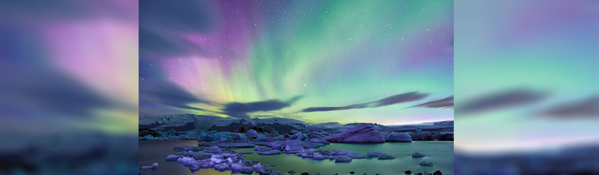

Pontos Turísticos Curiosos
Aurora Boreal, na Islândia
Famosa pelos vulcões e geleiras, a Islândia é um dos principais destinos para apreciar este incrível fenômeno. Isso porque o país está situado no Círculo Polar Ártico. A melhor época para admirar a aurora boreal é entre o final de setembro e o início de março, que correspondem ao outono e inverno no hemisfério norte. A aurora boreal é um fenômeno muito bonito da natureza que ocorre no polo norte da Terra. Ela resulta do impacto dos ventos solares com o campo magnético do planeta.
Fontes: Toda Matéria e Adventure Club Acesso em 06/12/2019